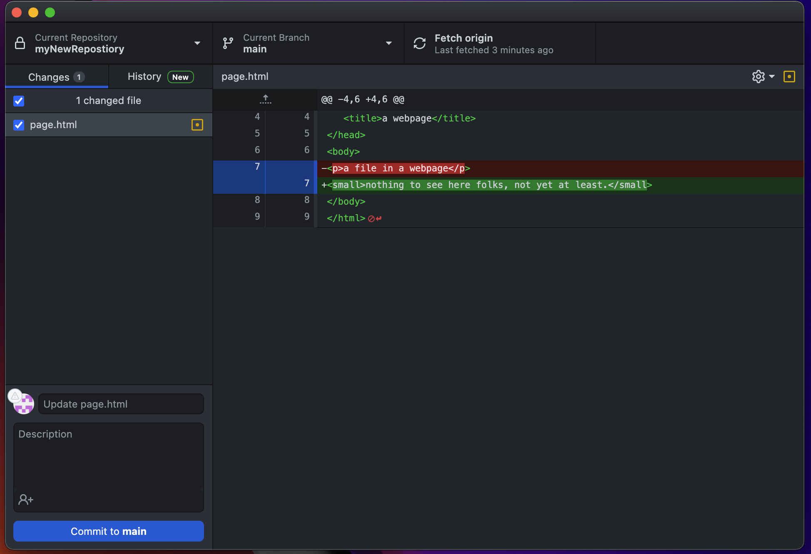

Lesson 3-3
Git Commit % Git Push - What is it/How to do it
Have you ever told someone that you will do something, and actually followed through with it? Maybe like saying you'll hang out soon and then the next weekend you go to the movies? Those are examples of commitments, and with your repository you will do the same.
Git Commit is a command used to stage changes to be pushed to the GitHub Cloud. When you commit something, you are getting it ready to be put up on GitHub and update all other locations with your new changes.
Commits are very critical to the communication and stages of a project. Here's how:
- Commits show the different stages of the developement of a project.
- Commit Messages tell us about what each stage added/removed from the project.
- A commit can be made as soon as any minor change is made to a file (even adding a space triggers git to offer you the ability to make a commit).
Commit Messages
Commit messages are text-based messages that you write outlining the changes that you made in a project at a certain commit. These messages are read by not only partners on a project but also senior mangement and/or professors. It is also important to make good commit messages because someone coming from an outsider's perspective will use your commit messages to get an idea of how you solved a problem, or did something.A general rule of thumb for commit messages is as follows:
- The message should be at least 20 characters in length, ideally more. This would equate to a few words. DO NOT MAKE EMPTY COMMITS!
- The message should describe, in detail, what you did. For example, if you made a function that added two numbers that wasn't there before, you could say "created a function that adds 2 inputted numbers"
- Use proper grammar and spelling.
- Does NOT include code snippets in the message itself. This is bad practice as no one will understand what the code is supposed to do.
- Overall readable by any person at any time. Does not require context.
Now there are some times when you are doing one line changes and then commiting them. For example you switched a + for a - or you added css styling to one part of a webpage. Depending on your organization, you can do simple 1 word commits, but I strongly recommend that you still 'commit' (sorry for the cheesy joke there) to writing messages based on the aforementioned rules.
Since this site is on a open-source repository, I can show you my commit history for this site. You can view the commit history here.
The final step to upload files to the GitHub Cloud is git push. This command will send the updated version of files and folders to the GitHub Cloud from your local machine or server, depending on where you initate it. It will also make note of the commit message that you thoughtfully wrote and display it on GitHub.com in each iteration of a file. Git Push is like you send the rock from the slingshot towards a target (hopefully not another living thing).
Pushes are the reason that pulls are necessary. When someone does a push, a pull is needed to maintain consistency in the repository's files.
Now then, let's see how we can commit and push files.
GitHub Desktop
- Open GitHub Desktop and select your current repository.
- If you have changes to commit, you should see something like Figure 3F. If not, wait until you make changes, and then check back.  Figure 3F: The pane to the right shows the additions you made in green. It shows deletions in red.
- To Commit, type in a brief message in the top box, and a longer description in the bottom box. Click the "Commit to main" button at the bottom. (see Figure 3G) Figure 3G: Writing commit title and message.
- Finally, to push, just click the "push origin" button at either location. (see Figure 3H) Figure 3H: About to push the changes to the GitHub Cloud.
- One done, it should go back to normal, like in figure 3A from the previous page.